Favorite Links
BillPratt.com
Sierra College
Woodland High School
Woodland Chamber Singers
Services
Larsson Marine
Marine Covers and Enclosures
- In Canvas
Marinas to stop and visit
Lagoon Cove Marina
Sullivan Bay Marina
Blind Channel Resort
Informational websites
Pat's Boating in Canada
National Data Buoy Center
BC Marine Weather
Rockfish Conservation Areas
U. S. Customs and Border Protection
WiFi on your boat made simple!
- Land & Sea WiFi
Master Gardener Yolo County
Family and Friends
| 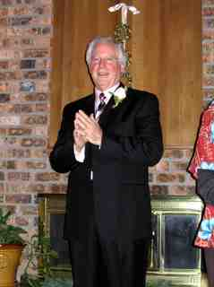 | 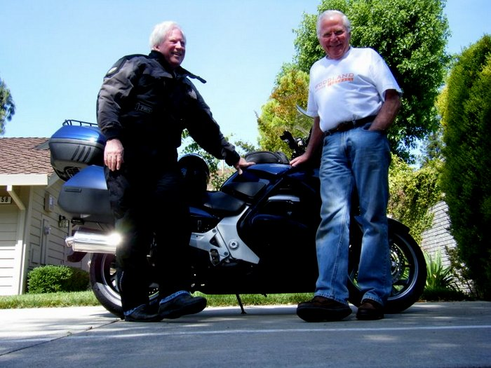 | 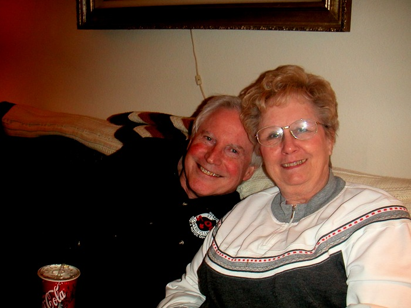 | 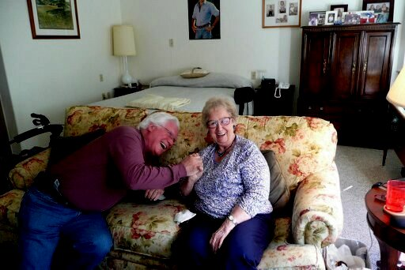 |
{kind=link}
{kind=link}
{kind=link}
{kind=link}
This is my brother Bill Pratt at his wedding. Bill was an avid motorcycle rider, dropping in to visit us in Woodland. Click on -->www.billpratt.net to view some of his rides.
| 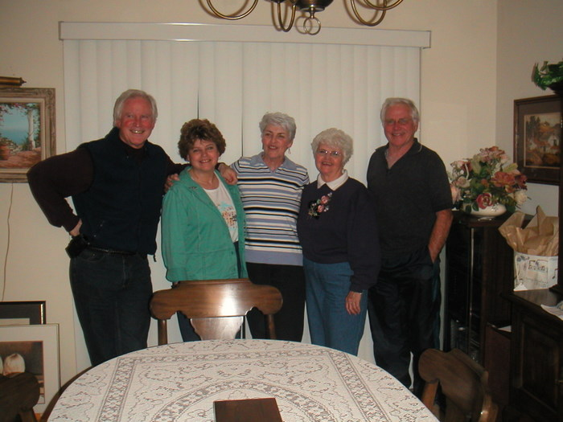 | 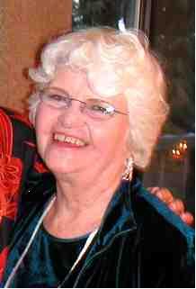 | 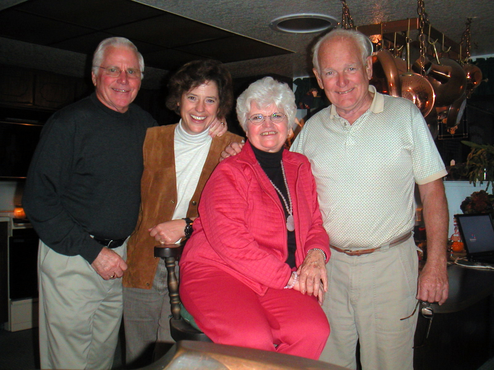 | 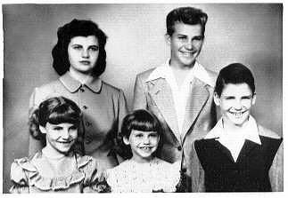 |
{kind=link}
{kind=link}
{kind=link}
{kind=link}
This is my sister Patricia Mortell. Pat is a Mary Kay consultant and is retired from many years of teaching at a local community college. Pat and Mike recently purchased property in Melba, Idaho where they built their long awaited dream home.
| 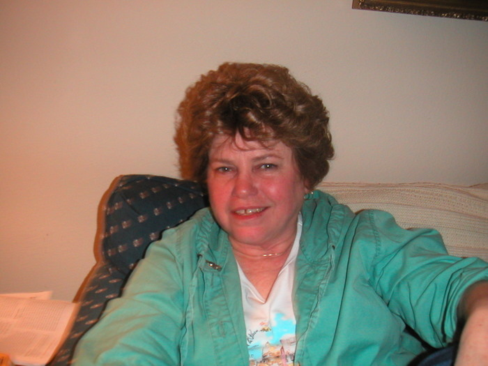 | 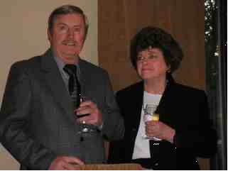 | 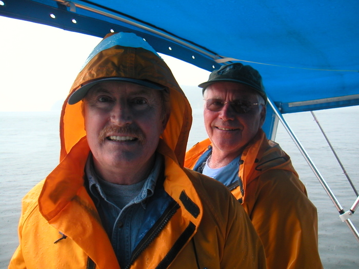 | 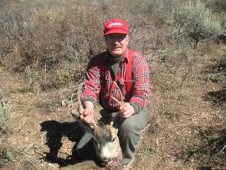 |
{kind=link}
{kind=link}
{kind=link}
{kind=link}
This is my youngest sister Rita and her husband Walt. They live in Nampa, Idaho. Rita works for the Department of Fish and Game. Walt is a retired machinist. Walt is an expert gunsmith and has a well equipped shop. The photos above are of Walt and Rebecca on one of our many hunting trips.
| 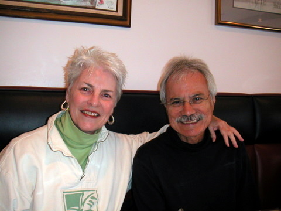 | 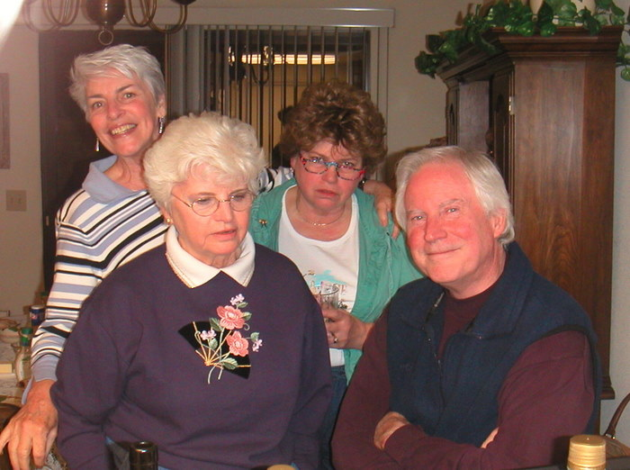 |
{kind=link}
{kind=link}
Sister, Mary Salmon lives in New Braunfels, Texas and is married to Roberto. They have a daughter, named Shannon and three grandchildren.
| 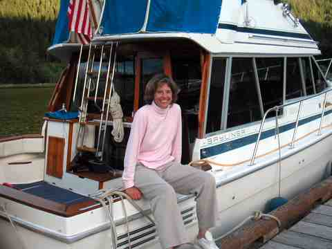 | 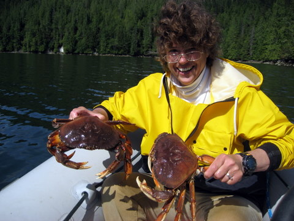 | 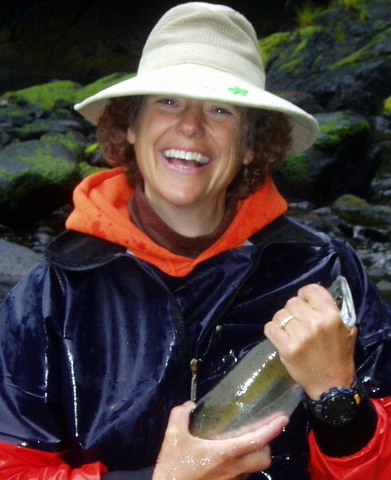 |
{kind=link}
{kind=link}
{kind=link}
This is the love of my life, my wife Rebecca. We first met on the ferry Malaspina that was headed for Sitka Alaska 26 Years ago. A year later we were married by Ships Captain John Hardin on the Far East Cruise. We have been truly blessed to be able to share our lives and adventures together. Our travels together have resulted in many close friendships which we cherish dearly. So if you see our vessel Rebecca Ann cruising in and around the Broughton Islands, or if you see someone in a Stearns inflatable kayak fighting a fish, that would be us.
| 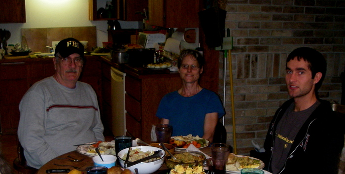 | 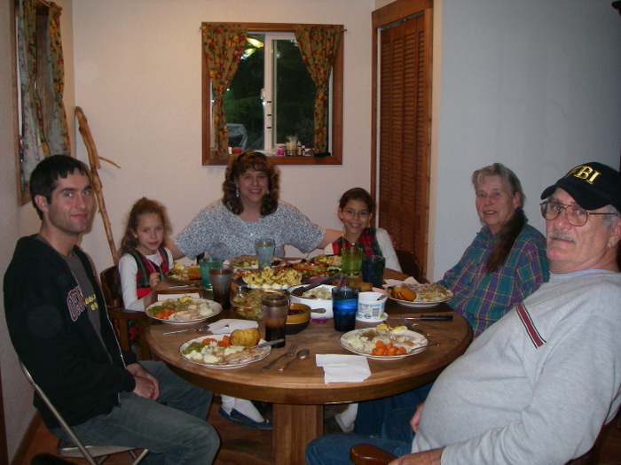 | 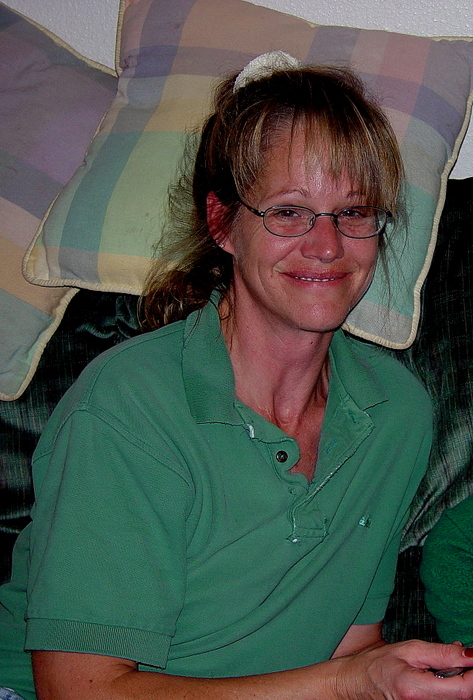 | 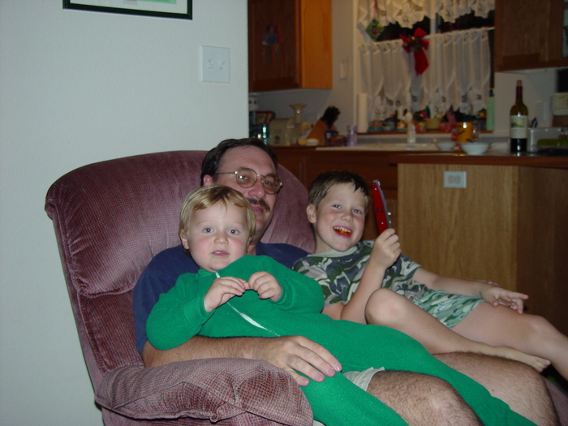 |
{kind=link}
{kind=link}
{kind=link}
{kind=link}
Rebecca's family includes her mother, Doris Bowman (a renowned artist and teacher), and father, Frank Bowman (renowned artist of multiple disciplines including carvings in wood and stone, metal sculpture in both arc and gas welding, paintings in oil, and multiple works on the lathe); her sister Jennie (a botanist and biologist with plants being her first love, along with horses) with her husband Paul and their son John; her sister Terry, and her husband Johnny, along with their daughters Karina and Kiana (own and run a charter business in Sitka, AK called the Strawberry Inn which has lodging for up to 30 clients); and her sister Laura, with husband Eric, and their sons Nicholas and Matthew.
| 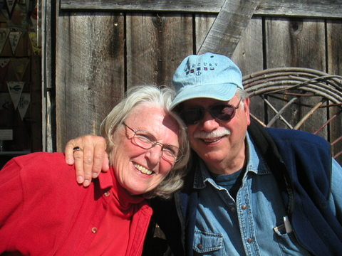 | 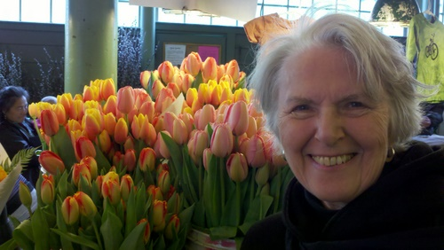 | 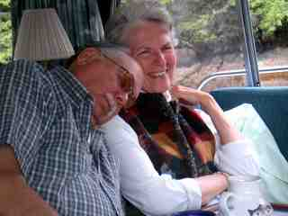 |
{kind=link}
{kind=link}
{kind=link}
Barb and Trav have been our boating companions since 1989.
Crew of Rebecca Ann